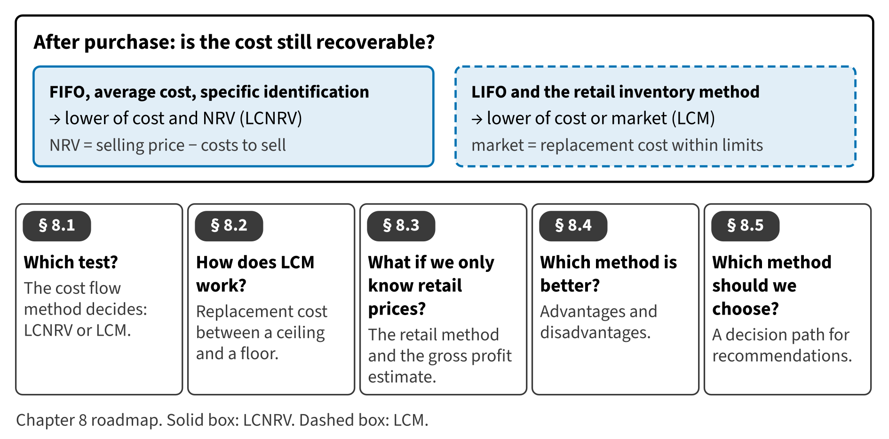

Part II · Recognition and measurement of assets · Chapter 8
Inventory II: Measurement Tests, Retail Estimates and Choosing a Method
المخزون (2): اختبارات القياس وتقديرات التجزئة واختيار الطريقة
Chapter 7 measured inventory at cost. But cost is only the starting point. If prices fall, or goods become damaged or old-fashioned, the company may not recover the cost when it sells the goods. Then the inventory must be written down. In this chapter you learn the two write-down tests, how retailers estimate inventory from selling prices, and how to recommend a method.

Start here
Then
What this chapter is tested on
| LOS | Official statement (ICMA, 2024) | In plain words | Depth here |
|---|---|---|---|
| A.2.e | demonstrate an understanding of the lower of cost or market rule for LIFO and the retail inventory method, and the lower of cost and net realizable value rule for all other inventory methods | Apply LCM to LIFO and retail inventory, and LCNRV to all other methods; use the retail method. | Full treatment |
| A.2.h | identify advantages and disadvantages of the different inventory methods | Identify the advantages and disadvantages of each inventory method. | Full treatment |
| A.2.i | recommend the inventory method and cost flow assumption that should be used for a company given a set of facts | Recommend an inventory method and cost flow assumption for a given set of facts. | Full treatment |
| A.2.ff.iii | identify and describe the following differences between U.S. GAAP and IFRS: … (iii) inventories, with respect to costing methods, valuation, and write-downs (e.g., LIFO) … | State the IFRS differences: LCNRV for all inventories, and reversal of write-downs. | Preview (full in Chapter 17) |
The official statements are quoted from the ICMA Learning Outcome Statements (effective September 1, 2024). The plain-words column restates them in simpler English. The exam may test any outcome up to Level C.
What you already know
If you studied IAS 2, you know one test: the lower of cost and net realizable value. U.S. GAAP uses the same test for most inventory. The new part is the older test, lower of cost or market, which U.S. GAAP still requires for LIFO and the retail method. Also note: IFRS reverses write-downs when prices recover; U.S. GAAP never does.
The 9 key terms
Every scene has Check Answers and Try Again. Try Again reshuffles rather than revealing. When you are wrong, the first thing you read is the reason for the option you chose, taken from the book's own explanations. Progress is saved in this browser.